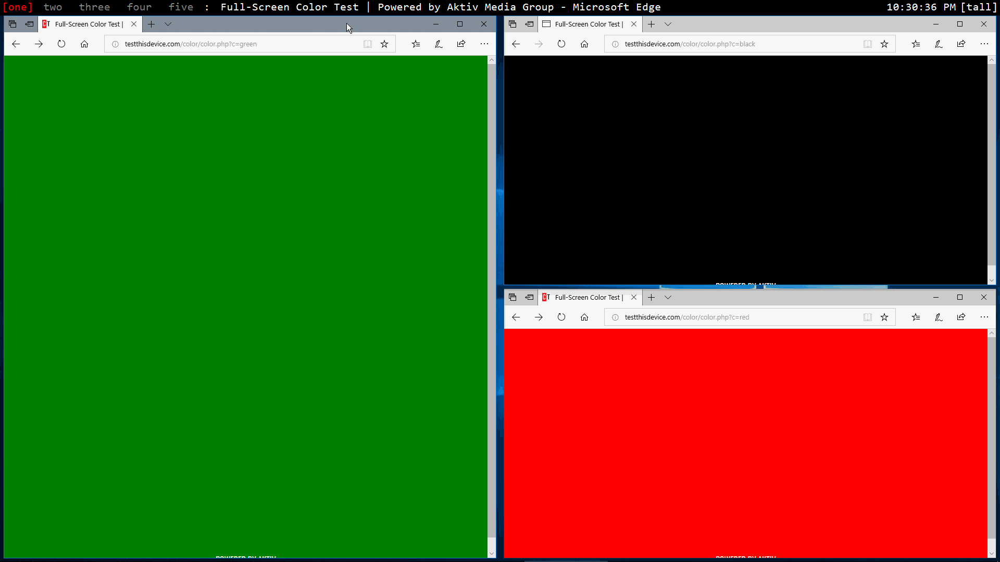

below are some examples of common interactions in workspacer, using the default keybindings
moving focus
you can use alt-j and alt-k to rotate the focused window

moving windows in a workspace
you can use alt-shift-j and alt-shift-k to rotate the window order

moving windows between workspaces
you can use alt-{1..9} to switch to a workspace, and alt-shift-{1..9} to move a window to a workspace